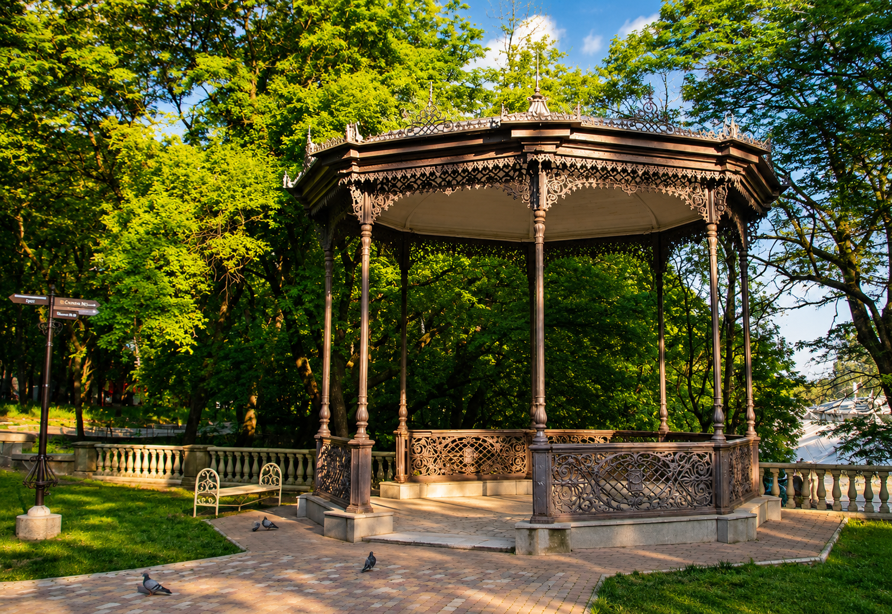

Кисловодск соединяет ритм старого курорта и мягкую горную природу: здесь легко идти пешком, слушать город и замечать детали, которые обычно проходят мимо.

Кавказские Минеральные Воды
Кисловодск — зеленое сердце Кавказских Минеральных Вод
Город нарзанов, парков и спокойных прогулок среди гор
Кратко о городе
Кисловодск создан для медленного дня
Маршрут удобно строить вокруг парка, галереи, Долины роз и вечерних видов. Это город, где отдых ощущается не как пауза, а как отдельное впечатление.
Достопримечательности
Главные места: Кисловодск

01
Курортный бульвар
Главная прогулочная линия города: фасады, музыка, кофейни, старые виллы и курортная жизнь без спешки. Здесь лучше всего начинать знакомство с Кисловодском.

02
Национальный парк
Один из самых больших городских парков Европы. Терренкуры, смотровые точки и длинные зеленые маршруты создают ощущение настоящего горного курорта.

03
Нарзанная галерея
Историческое место, где курортная традиция чувствуется сильнее всего: минеральная вода, архитектура и спокойный ритуал прогулки по центру.

04
Долина роз
Самая фотогеничная часть парка для прогулок и панорам. Особенно красива летом, когда цветники и аллеи наполняют воздух мягким ароматом.

05
Колоннада
Узнаваемый вход в курортный парк и точка, где город переходит в зеленый маршрут. Здесь чувствуется парадный, но спокойный характер Кисловодска.
Атмосфера города
Кисловодск между источниками и парком
Утро в парке
Лучшее время для первых маршрутов: прохладный воздух, мягкий свет и дорожки, которые постепенно уводят выше города.
Минеральные традиции
Нарзан здесь не просто напиток, а часть городской культуры. Галерея помогает почувствовать старый курорт без лишней музейности.
Старый курорт
На бульваре город становится особенно кинематографичным: свет, фасады, музыка и размеренная прогулка складываются в цельную атмосферу.
Закатные виды
К вечеру Кисловодск становится теплее и глубже: горы темнеют на горизонте, а город мягко зажигает огни.
Город в деталях
Что полезно знать перед поездкой
Мягкий, солнечный и комфортный для прогулок большую часть года.
Около 800 метров над уровнем моря, поэтому воздух здесь особенно свежий.
Горный парк, терренкуры, цветники и широкие виды на Кавказ.
Классический курорт с архитектурой XIX века и традицией лечебных прогулок.
Нарзан и галереи остаются главным символом города.
Лучшее время для поездки: апрель–октябрь, особенно май и сентябрь.
Кисловодск умеет замедлять. И именно этим запоминается.

Воздушное приключение
ПОЛЕТ НА ПАРАПЛАНЕ
Открой для себя Кавказ с высоты птичьего полёта.